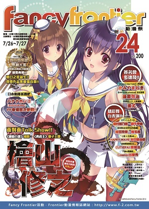

台灣動漫推廣協會簡介 about TACPA
- since 2003
本會成立於2003年9月, 主要以國內外動漫文化研究、推廣為主。會員構成主要為動漫產業從業人員、編輯、研究學者。
業務範圍包括出版動漫畫情報雜誌、動漫研究專書、動漫精選畫冊; 舉辦動漫同人展售會、動漫文化講座、動漫主題策展、動漫音樂會、流行動漫演唱會、原創漫畫比賽、Cosplay比賽等等。
本會亦接受文化部、新北市政府、桃園縣政府、宜蘭縣政府、台中市政府、高雄市政府等公家單位以及郵局、台啤、宏碁等私人單位委託承辦動漫相關活動。
開拓動漫祭系列活動 fancy frontier, petitfancy
- since 2002
「Fancy Frontier開拓動漫祭」(簡稱FF) 是為了能創造一個讓漫畫創作者、動漫愛好者以及Cosplayer都能歡樂參與而創辦的優質活動。
也希望藉由本活動, 能夠讓一般社會大眾對於動漫畫創作、動漫畫愛好者的觀點趨向正面。以及更重要的, 維護本土漫畫界僅存的創作火苗, 並協助其逐漸茁壯起來。
2002年10月舉辦第一屆, 以「擁有Comiket般旺盛的創作交流氣氛, 以及漫畫博覽會般豐沛的商機」為目標, 固定於每年寒暑假盛大舉行的動漫畫嘉年華會。
FF場內每屆都有千餘個漫畫創作團體於現場發表、展售原創、二創的漫畫創作。每場活動也會邀請日本動畫工作者、聲優或漫畫創作者, 在會場進行座談會、簽名會或Mini Live。此外也有各種各樣的舞台活動或特色展覽, 讓所有的參加者都對活動留下難忘的回憶。
FF主要參加者為動漫愛好者族群中的核心成員, 特色為具有較高的單位消費力及鑑賞力。FF原則上分別在每年寒假與暑假的週末舉行。
原創漫畫推廣活動 self-published work promotion
- ComicNova, 原創刊物出版補助計畫
原創作品交流會COMICNOVA
台灣唯一原創作品交流大會, 提供包含漫畫、插畫、音樂、小說、遊戲等所有原創作品的發表交流平台, 並成為國內出版社積極尋訪人才的活動。
原創刊物出版補助計畫
舉辦多次獨立出版之原創漫畫刊物補助計畫, 提供創作者出版資源與協助宣傳。
動漫畫相關講座系列 lectures
- 台灣國際漫畫研習營
緣起與歷史
面對國際作品的強力競爭與文化侵蝕, 台灣一直想要建立本土的漫畫產業。但是要建立一個自足而完整的產業所涉及的層面相當廣泛, 而且漫畫產業還涉及到文化部分, 與傳統產業有著很大的不同。
研習營舉辦之契機, 希望能藉由國際知名動漫從業人員與台灣相關業者進行良好的交流、分享成功經驗, 促進國內動漫畫產業的發展, 並進一步提供政府對相關政策的制定參考。
交流與展望
期望透過研習營, 讓有志於動漫畫創作者能夠開拓視野, 更期許兩岸四地能夠有更多的互動與結合機會, 共同開創華文漫畫的嶄新未來。- 歷屆主題
- 100年國際漫畫研習營
「漫畫出版實務精進學程」 - 101年國際漫畫研習營
「漫畫家跨出去！─漫畫創作跨界實務精進課程」 - 102年國際漫畫研習營
「漫畫創作大未來！─漫畫創作實務精進課程」
名家畫展系列 professional art exhibitions
- 名家畫展
邀請日本與台灣知名創作者不定期進行作品展覽, 推廣漫畫藝術創作欣賞風氣。
動漫畫演唱會系列 live performances
- 動漫演唱會
邀請日本知名動畫歌手舉辦演唱會, 如Jam Project、影山浩宣、遠藤正明、奧井雅美、栗林みな実等。
杜葳廣告股份有限公司簡介 (incomplete)
具備專業動漫畫產業背景
杜葳廣告旗下擁有台灣最大規模同人創作活動「開拓動漫祭」系列、唯一合法動漫畫情報誌《Frontier》、動漫文化研究專門叢書、代理海外漫畫相關書籍等業務歷經十餘年。主力團隊成員動漫業界經驗均長達十年以上, 在收集國內外動漫業界情報、分析動漫族群喜好以及推動台灣原創漫畫上均有卓越成績。
品牌活動／出版品
- 杜葳廣告旗下擁有動漫品牌活動／出版品
得獎紀錄
文化部第二屆金漫獎「最佳年度漫畫貢獻獎」
動漫同人活動
FF開拓動漫祭 (2002～迄今．共27屆)
PF亞洲動漫創作展 (2004～迄今．共24屆)
CN原創漫畫交流展 (2011～迄今．共5屆)
RF模型創作祭 (2014～迄今．共3屆)
出版品
Frontier動漫畫情報誌月刊 (2000～迄今．15年共175期)
原創漫畫《家族的肖像》(獲新聞局青少年優良讀物推薦)
動漫畫研究系列叢書 (2006～迄今．共6本)
地方政府專案
- 長期與公家單位、地方政府配合承接動漫畫主題專案
杜葳廣告長期接受地方政府委任執行動漫相關主題活動, 業務範圍涵蓋展覽、同人活動、動漫演唱會、學術講座、動漫音樂會、海外貴賓邀請等。
- 杜葳廣告執行之地方政府動漫主題專案
- 文化部 (新聞局)
- 「國漫營動漫人才培訓課程」專案承接 (2010)
- 「國際漫畫研習營」專案承接 (2011～2013)
- 新北市
- 「新北市動漫畫原作劇本競賽」業務執行 (2011)
- 「府中15–跨越疆界特展」專案承接 (2012～2013)
- 「府中15–電玩美學特展」專案承接 (2015)
- 桃園縣
- 「桃園國際動漫大展」專案承接 (2012)
- 台中市
- 「台中動．漫．力」專案承接 (2012～2015)
- 花蓮縣
- 「花蓮國際動漫大展」專案承接 (2015)
- 高雄市
- 「動漫高雄．精彩樂活」專案承接 (2008)
- 「高雄動漫展」專案承接 (2009～2010)
- 「駁二動漫祭」專案承接 (2011～2015)
漫畫主題相關活動
- 主辦動漫畫主題相關活動經驗豐富
長期主辦、承辦各類型動漫畫相關活動, 自提案、籌備、聯繫、整合行銷一貫執行, 是委任動漫主題活動最值得信任的團隊。
- 杜葳廣告執行、主辦之動漫主題相關活動
- 動漫演唱會
- 「May’n」、「KOTOKO」、
「 いとうかなこ」演唱會主辦 - 「Dream Stage」演唱會 (2008～2011) 主辦
- 「JAM Project」演唱會 (2008～2011) 主辦
- 「聖夜歌姬」演唱會 (2008) 主辦
- 「極限燃燒」演唱會 (2007、2009) 主辦
- 「May’n」、「KOTOKO」、
- 動漫音樂會
- 「和田薰動漫交響音樂會」專案承接 (2012)
- 「李國鼎故居動漫音樂會」專案承接 (2010)
- 畫展
- 「亞洲名家插畫展」主辦 (2012)
- 「雪華彩影」遊戲原畫主題畫展主辦 (2010)
- 「光風幻夢」Tony原畫展主辦 (2010)
- 競賽
- 「開拓極短篇原創大賞」主辦 (2012～迄今)
- 「驚艷幻想Cosplay大賽」專案承接 (2012)
- 「熱情仲夏Cosplay大賽」專案承接 (2010)
- 「原創漫畫出版補助計畫」主辦 (2010～2011)
- 「台灣啤酒創意CG繪圖大賽」專案承接 (2008)
- 「中華郵政創意郵務服比賽」專案承接 (2006)